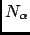
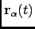
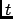
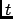

Next: Parameters
Up: Radius of gyration
Previous: Radius of gyration
Contents
Theory and implementation
ROG is the name of several related measures of the size of an object, a surface, or an ensemble of
points. It is calculated as the Root Mean Square Distance between the system and a reference that can be either
the center of gravity of the system either a given axis. In nMOLDYN, the reference is choosen to be the center
of gravity of the system under study. Mathematically, it can be defined as:
where  is the number of atoms of the system, and
 and
are
respectively the position of atom  and the center of mass of the system at time .
and the center of mass of the system at time .
ROG describes the overall spread of the molecule and as such is a good measure for the molecule compactness. For
example, it can be useful when monitoring folding process.
In nMOLDYN, ROG is computed using the discretized version of equation 4.32:
where  is the number of frames and
is the number of frames and  is the time step.
is the time step.
Next: Parameters
Up: Radius of gyration
Previous: Radius of gyration
Contents
pellegrini eric
2009-10-06